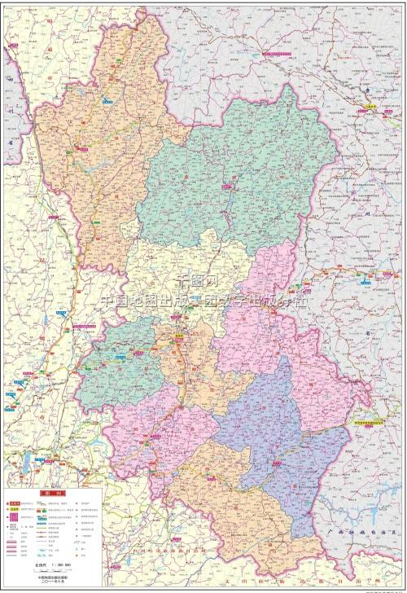
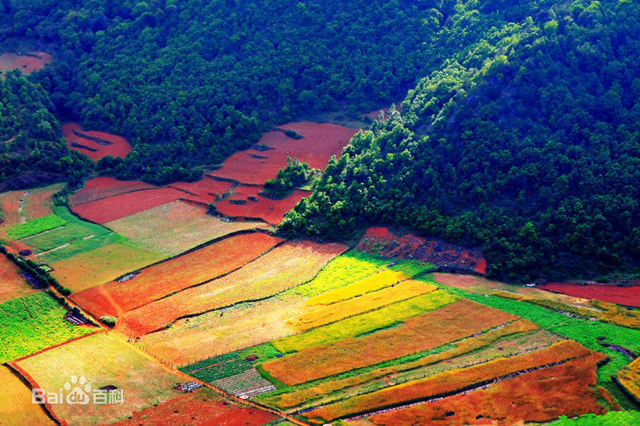
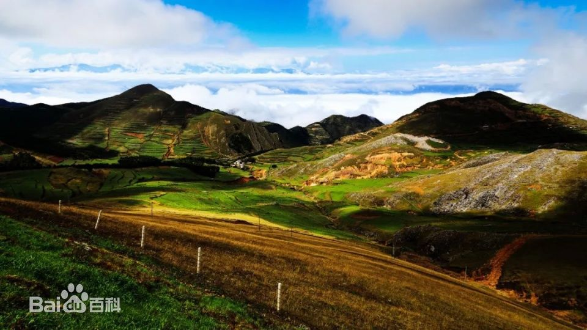
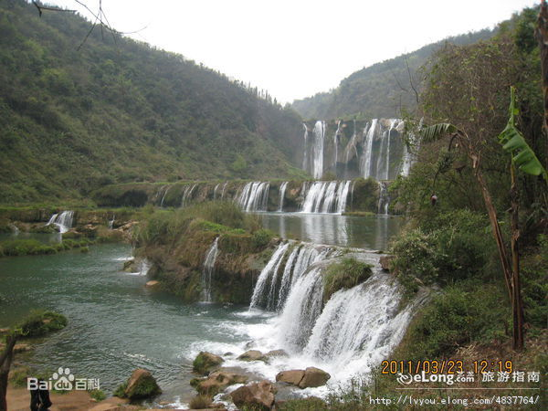
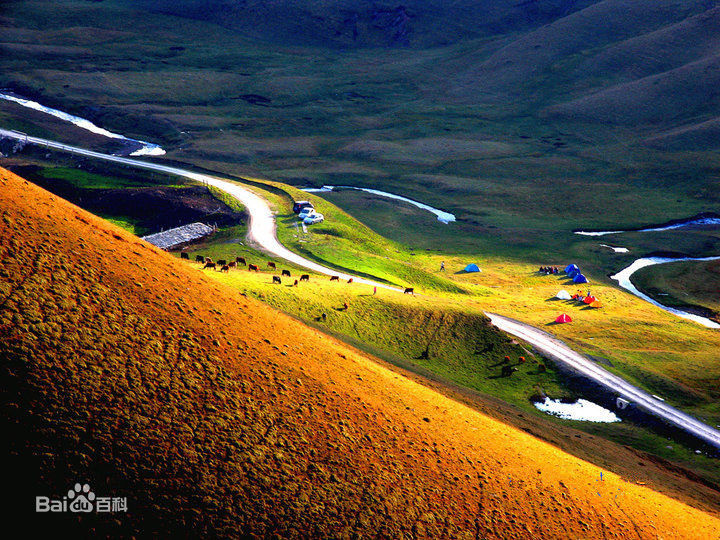

-

位置境域
曲靖市位于云南省东部，地处珠江源头，和黔、桂两省（区）交界，自古为内地入滇之重要门户，市境介于东经103°03′～ 104°50′、北纬24°19′～ 27°03′之间。东与贵州省六盘水市、兴义市和广西壮族自治区隆林县毗邻，西与昆明市嵩明县、寻甸县、东川区接壤，南与文山州丘北县、红河州泸西县及昆明市石林县、宜良县相连，北与昭通市巧家县、鲁甸县及贵州省威宁县交界。市境东西最大横距103公里，南北最大纵距302公里。总面积2.89万平方公里，占云南省面积的13.63%。市政府所在地麒麟区，海拔1881米，离省会昆明130公里。
-

地形地貌
曲靖市地处云贵高原中部滇东高原向黔西高原过渡地带的乌蒙山脉，西与滇中高原湖盆地区紧紧相嵌，东部逐步向贵州高原倾斜过渡，中部为长江、珠江两大水系分水岭地带，高原面保存较好，形态完整，东南部具有典型的岩溶丘原景观。市境属扬子地台的滇东褶皱带，地势西北高，东南低。曲靖最高点在会泽县大海梁子牯牛寨，海拔4017.3米，系乌蒙山脉主峰；最低点在会泽县娜姑镇王家山象鼻岭小江与金沙江汇合处，海拔695米，相对高差3322.3米。市政府所在地海拔1881米。市境地貌以高原山地为主，间有高原盆地，高山、中山、低山、河槽和湖盆多种地貌并存。 境内山岭河谷相间交错，地质构造复杂，地层发育较为齐全，碳酸盐岩石分布广、面积大，多溶洞和岩溶地貌，山脉有乌蒙山系和梁王山系，多呈北东—南北向或近南北向，大致可分为西列、中列和东列3个平行岭脊。境内多为高原山地，有万亩以上的坝子34个。其中陆良坝子771.99平方公里，为全省第一大坝子；曲沾坝子面积435.82平方公里，为全省第四大坝子。
-

气候特征
曲靖主要为亚热带高原季风气候。一般具有冬春光照条件较好，春温不稳，风高物燥，降水不均；夏无酷暑，降水集中，涝旱兼有，风和日丽；秋季降温快，阴雨多；冬暖冬干，寒潮降温的气候特点，具有“一山分四季，十里不同天”的立体气候。多年平均气温14.5℃。2011年，曲靖市遭遇自1961年来最严重的春、夏、初秋连旱，全年各县（市）区平均气温14.12℃，其中，麒麟区、陆良县并列最高15.1℃，富源县最低13.0℃；平均降水量592.1毫米，其中罗平县最多1027.1毫米，马龙县最低417.0毫米；平均日照时数1998.12小时，其中会泽县最多2471.2小时，罗平县最少1546.2小时。 [1] 2013年平均气温14.8℃，年均积温5402℃，年均日照时数2093小时。
-

水文特征
曲靖市地处长江、珠江两大水系的分水岭地带，山高谷深，断裂、河曲发育，流域面积100平方公里以上的河流有80多条，以南盘江、北盘江、牛栏江、黄泥河、以礼河、块择河、小江等为主要干流，分属长江和珠江两大水系。
-

土壤
曲靖市境内土壤类型从赤红壤到亚高山草甸土均有分布，土壤地理分布具有明显的垂直带和一定的水平差距。全市土壤划分为14个土类、35个亚类、75个土属、273个土种，以红壤为主（占61.07%），其次为紫色土（占9.84%）、黄棕壤（占5.16%）、水稻土（占4.94%）、黄壤（占3.47%）、石灰土（占3.47%），其他土壤占12%。赤红壤分布于东南部南盘江及其支流海拔1100米以下河谷；燥红土分布于西北端小江海拔1300米以下河谷，表土复盐基过程明显；黄壤为东南部（罗平、师宗及富源南部）基带土壤，垦殖系数较高；山地黄棕壤、棕壤、暗棕壤、亚高山灌丛草甸土出现于高山、半高山的垂直带谱中，仅山地黄棕壤分布较大，垦殖率稍高；紫色土和石灰土是幼年性岩成土，前者集中于北部，后者多见于东南部；冲积土、草甸土和沼泽土散布于第四系、第三系河谷或湖盆坝区，一般垦殖历史悠久，土层深厚肥沃，大部分辟为耕地。山原红壤是滇东高原广大地区的基带土壤，保留古红色风化壳残留特性，化学风化和物理风化强烈，具有“干、酸、粘、瘦、薄”等障碍因素，有机质含量低，是造成本地区中低产田地多和林草生长缓慢的重要因素之一。